Siz söyleyin.
O animasyona dönüşsün.
Premiere Pro ve DaVinci Resolve Studio için ücretsiz bir eklenti. Timeline'da bir aralık seçin, bir stil seçin: Kilnframe söylediğiniz için bir animasyon yazar, kendi bilgisayarınızda render alır ve ses efektleriyle birlikte aralığın tam üstüne yerleştirir.
Altı saniyelik konuşma, gerçek bir üretim.
Yukarıdaki klip için Kilnframe'in içinde olanlar: hangi kelimeyi ne zaman duyduğu, yapay zekanın bunlardan planladığı sahne ve ortaya çıkan sonuç.
Ne duydu
Konuşma sizin bilgisayarınızda, kelime kelime zamanıyla yazıya döküldü.
Ne planladı
- konu
- Bilgi sağanağı
- teknik
- 3D metafor, tam ekran
- 1,32 sn
- "haber": küçük bir figürün yanına kilden bir gazete kartı düşer
- 3,24 sn
- "yağıyor": düşüş yağmura döner, parçalar birikir
- 4,52 sn
- "sağanak": sağanak başlar, figür şemsiyesini açar
- yazı
- BİLGİ SAĞANAĞI, kelime kelime
- kamera
- yavaşça yaklaşır, sağanakta hafifçe yukarı bakar
- ses
- tok 1,32kağıt 2,20hışırtı 3,24tok 4,52pop 5,24
Ne yaptı
Kil Lacivert stili, kodla yazıldı ve bir MacBook Pro'da yaklaşık bir dakikada render alındı. Yazılar konuştuğunuz dili izler.
Siz onaylamadan timeline'a hiçbir şey gelmez.
Kilnframe, Premiere'in ya da Resolve'un içinde bir panel ve menü çubuğunda küçük bir yardımcı. Dört adım; tek bir kare render alınmadan önce her sahneyi siz onaylarsınız.
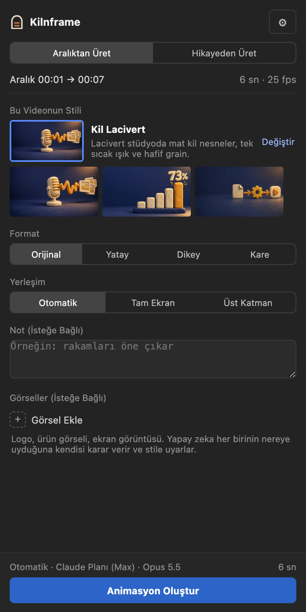
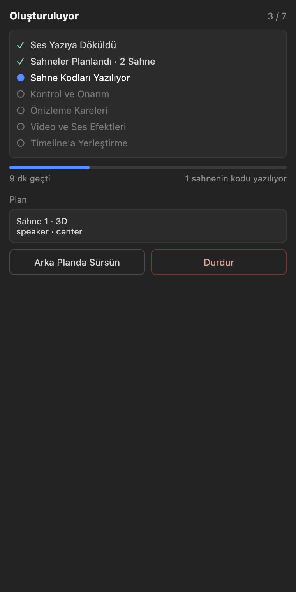
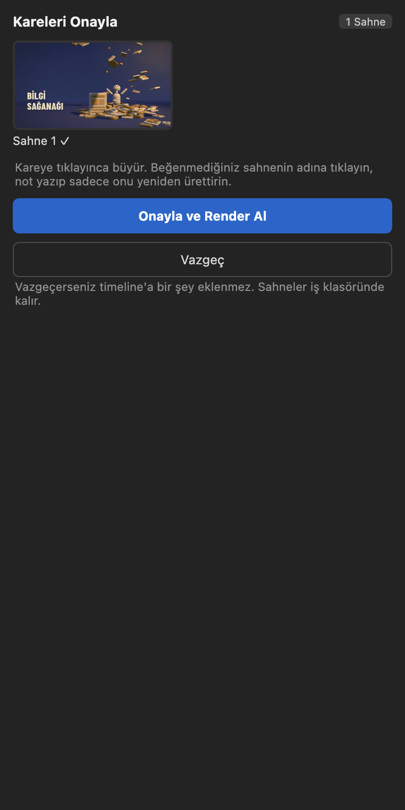
Sayıya grafik. Fikre çizim.
Plan her sahne için bir teknik seçer. Otomatik modda okunacak bir şey tam ekran gelir, bir isim ya da anahtar kelime yanınıza gelir. Yüzünüz asla kapanmaz.
On bir görünüm, bir de sizin tarif ettiğiniz.
Stil; grafiklerin, diyagramların, yazıların ve geçişlerin nasıl görüneceğine ve nasıl sesleneceğine karar verir. Renkler kısık tutulur, renk düzeltmesi yapılmış görüntünün yanında sırıtmaz.
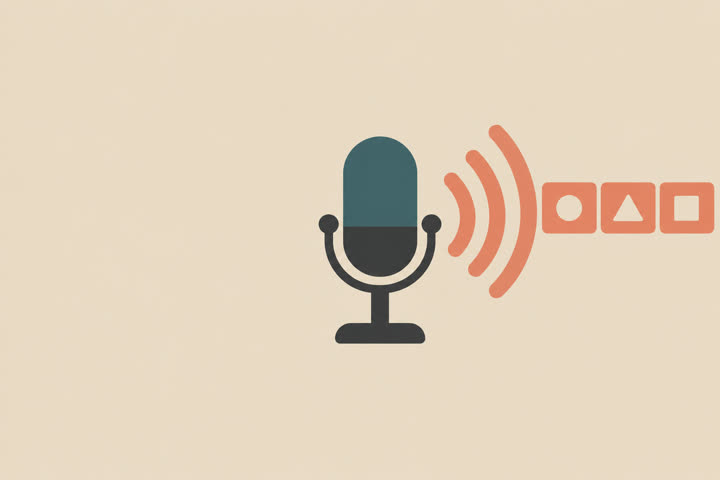
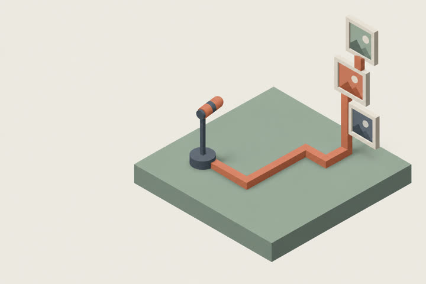
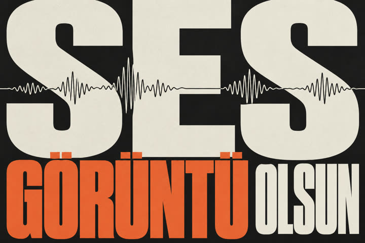
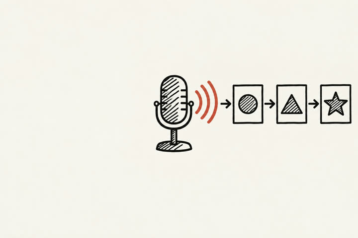
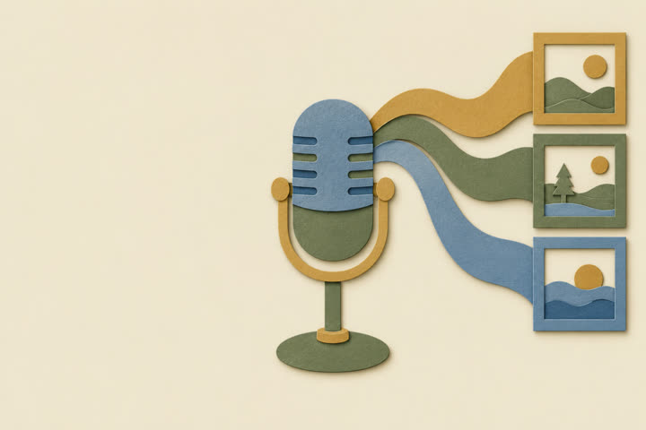
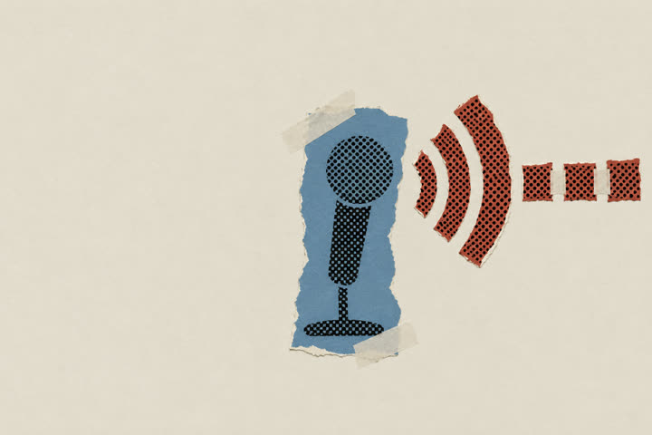
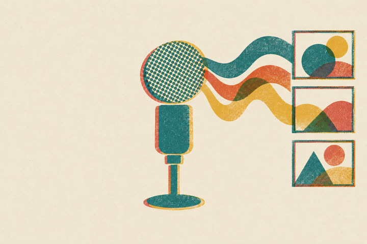
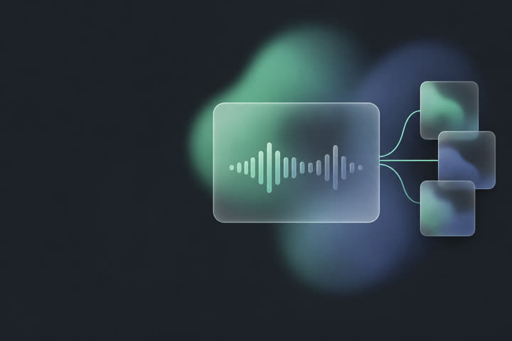
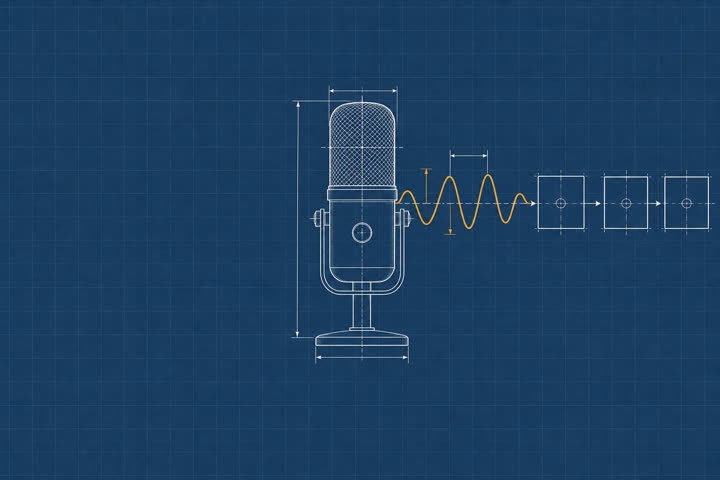
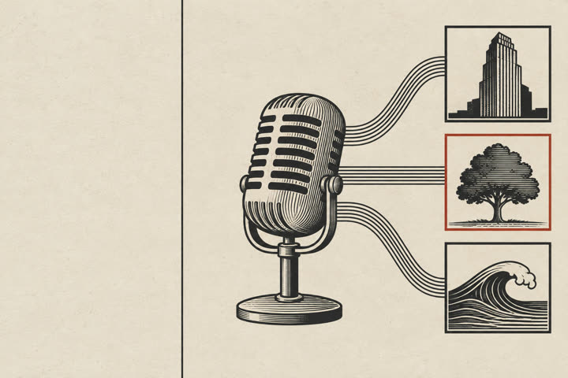
Kaydınız yok mu? Bir konuyla başlayın.
Hikayenin ne hakkında olduğunu yazın. Kilnframe hikayeyi yazar, seslendirir ve altına müzik koyar; animasyona hazır yeni bir sekansta.
- Konuyu yazın, süreyi, dili ve isterseniz tonu seçin.
- Metni düzenleyin ya da bir notla yeniden yazdırın.
- Bir ses seçin, önce dinleyin.
- Yeni bir sekans açılır: seslendirme A1'de, müzik A2'de, konuşurken kısılarak.
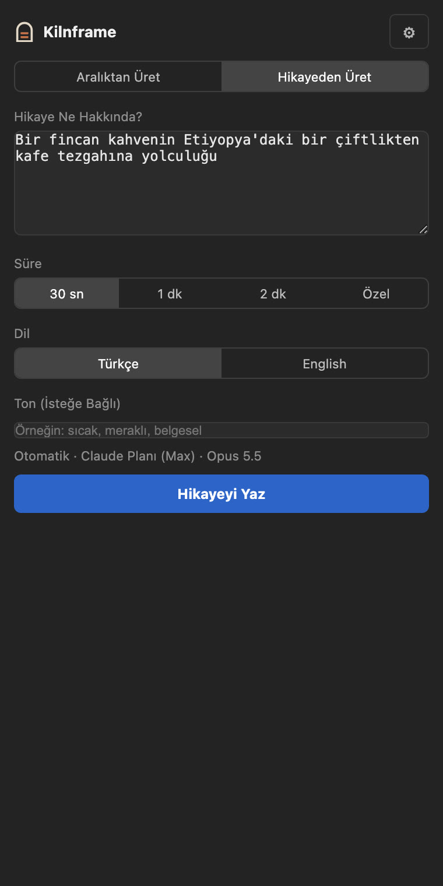
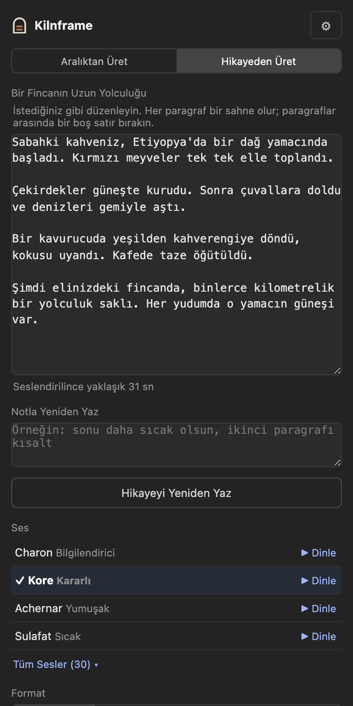
Söylediğinizi izleyen müzik.
Müzik sekmesi timeline'ın tamamını ya da bir aralığı Google Lyria ile konulara göre bölüm bölüm müzikler ve ayrı bir ize yerleştirir.
- Müziği planlayın: konulara göre bölümler, her birinin havası ve temposu.
- İstediğinizi değiştirin: bir bölümün yönü, iki bölümü birleştirmek ya da müziksiz bırakmak.
- Üstünde sesinizle dinleyin, istediğiniz bölümü yeniden ürettirin.
- Yerleştirin: her bölüm bir klip, sesinizin altında kısık, son karede gerçek bir kapanış.
Google Gemini anahtarı gerekir, bölüm başına yaklaşık 0,08 dolar. Lyria müzikleri Google'ın duyulmayan SynthID filigranını taşır.
Neler yapar.
Ne ürettiği, size nasıl teslim ettiği ve neyle çalıştığı.
- Teknikler
- Yerleşim
- Otomatik, tam ekran ya da görüntünüzün üstünde. Otomatik her sahne için ayrı karar verir, yüzünüzden uzak durur.
- Format
- Sekansınızın kendi formatı ya da 16:9, 9:16 ve 1:1; her biri kendi kadrajına göre kurulur, kırpılmaz.
- Video
- Tam ekranda H.264 .mp4; görüntünün üstünde şeffaf ProRes 4444 .mov. Sekansınızın birebir kare hızı.
- Ses
- Kodla üretilen efektler ayrı izde: bir miks ve her efekt ayrı 48 kHz .wav.
- Paylar
- Başta ve sonda fazladan kareler, kırpıp kaydırabilmeniz için.
- Uzun aralık
- Cümle sonlarından yaklaşık 30 saniyelik parçalara bölünür, tek tek onaylanır, arka arkaya yerleşir.
- Görselleriniz
- Logo, ürün görseli ve ekran görüntüleri animasyona girer; üstlerindeki yazılar okunur, doğru kullanılır.
- Onay
- Gerçek görüntünüzün üstünde her sahneden bir kare; tek sahneyi notla yeniden yaptırma.
- Hikaye modu
- Bir konu; metne, seslendirmeye ve altında müziğe dönüşür, yeni bir sekansta.
- Diller
- Panel İngilizce ya da Türkçe. Animasyondaki yazılar konuştuğunuz dili izler.
- Yapay zeka
- Claude planı önerilen · ChatGPT planı önerilen · Grok planı · Claude, OpenAI, Gemini, xAI, MiniMax, OpenRouter anahtarı · bilgisayarınızda LM Studio. Sadece görsel okuyabilen modeller.
- Gereken
- Premiere Pro 2026 (25.6 ve sonrası) ya da DaVinci Resolve Studio 21.1 ve sonrası (ücretsiz Resolve eklenti yüklemez). Apple silicon işlemcili Mac, Windows 10 ve 11, ekran kartı. Yaklaşık 2 GB disk.
- Güncelleme
- Yeni sürüm çıkınca panel Güncelle düğmesini gösterir; kendiliğinden ve bir iş sürerken asla.
On yedi model, tek klip.
Aynı 11 saniyelik aralık ve üç kare, Beyaz Tahta stili, Otomatik mod. Her model planladı, tam ekran ya da üst katman kararını verdi, kodu yazdı ve render aldı. Hepsi tamamladı. Oynatmak için çekimin üstüne gelin.
| Model | Bağlantı | Süre | Çalıştırmanın liste fiyatı |
|---|---|---|---|
| Claude Opus 5.5 | Claude planı | 7,8 dk | 2,26 $ |
| Claude Fable 5.1 | Claude planı | 7,0 dk | 2,75 $ |
| Claude Sonnet 5.5 | Claude planı | 5,2 dk | 0,68 $ |
| Claude Haiku 5.5 | Claude planı | 6,1 dk | 0,08 $ |
| GPT 6 Astra | ChatGPT planı | 4,8 dk | 1,01 $ |
| GPT 6.1 Sol | ChatGPT planı | 5,0 dk | 0,29 $ |
| GPT 6 Luna | ChatGPT planı | 2,5 dk | 0,01 $ |
| Gemini 3.8 Flash | API anahtarı | 4,6 dk | 0,25 $ |
| Gemini 3.1 Pro | API anahtarı | 5,0 dk | 1,00 $ |
| Grok 4.5 | API anahtarı | 4,7 dk | 0,33 $ |
| Grok 4.7 | API anahtarı | 18,8 dk | 1,49 $ |
| MiniMax M3 | API anahtarı | 17,4 dk | 0,18 $ |
| MiniMax M2.7 | API anahtarı | 3,5 dk | 0,04 $ |
| Qwen 3.8 27B | LM Studio, yerel | 121,5 dk | ücretsiz |
| GLM 5.3 Flash | OpenRouter, deneysel | 2,3 dk | 0,01 $ |
| Meta Muse Wonder | OpenRouter | 2,4 dk | 0,55 $ |
| Gemini 4 Argon | OpenRouter | 3,6 dk | 0,43 $ |
Tek klip, her modelle tek deneme, bir MacBook Pro'da: yön gösterir, hüküm değildir. Liste fiyatı, çalıştırmanın API üzerinden tutacağı ücrettir; Claude ya da ChatGPT planıyla aboneliğinizden düşer. GLM 5.3 Flash, 11 Ekim'de daha düşük bir düşünme ayarıyla eklendi, bu onu hızlı ve ucuz yaptı. Ayrıntıları daha zayıf olduğu için deneysel olarak işaretli: etiket kenarında kesilen yazı, koyu görüntü üstünde ince çizgiler. Meta Muse Wonder 13 Ekim'de OpenRouter üzerinden eklendi; OpenRouter bu modeli çalıştırmadan önce ayarlarında 18 yaş onayı istiyor. Gemini 4 Argon 14 Ekim'de eklendi; son sahnesindeki bir çizim sol kenardan taşıyor.
Bilgisayarınızda kalır.
Render, konuşma tanıma ve ses efektleri sizin bilgisayarınızda çalışır. Seçtiğiniz yapay zekaya sadece metin ve üç küçük kare gider, başka bir şey değil.
Kurmadan önce.
Gerçekten ücretsiz mi?
Evet. Kilnframe Apache 2.0 lisansıyla ücretsiz ve açık kaynak. Tek maliyet yapay zeka: zaten ödediğiniz Claude, ChatGPT ya da Grok planı, kullandıkça ödenen bir API anahtarı ya da yerel bir modelle hiçbir şey.
DaVinci Resolve'da çalışır mı?
Evet, Mac ve Windows'ta DaVinci Resolve Studio 21.1 ve sonrasında. Kurulum paneli Resolve'a da kurar; Workspace, Workflow Integrations, Kilnframe menüsünden açılır. Resolve'un ücretsiz sürümü eklenti yüklemez.
Hesap açmam gerekiyor mu?
Hayır. İndirin, kurun, paneli açın. Kilnframe hesabı ya da giriş yok.
Bir animasyon ne kadar sürer?
On saniyelik bir aralık için genellikle beş ile on dakika. Çoğu, yapay zekanın her sahneyi yazmasıdır; render'ın kendisi bir dakika kadar sürer.
Animasyonları ticari işlerde kullanabilir miyim?
Evet, sizindir. Kilnframe'in kodu Apache 2.0; animasyonlar GreenSock'un ücretsiz lisansıyla GSAP'i ve açık lisanslı fontları kullanır.
Animasyonu sonradan değiştirebilir miyim?
Render'dan önce herhangi bir sahneyi notla yeniden yaptırabilirsiniz. Sonrasında klip diğerleri gibi kırpılır; planı ve HTML'i projede kalır, değiştirip yeniden render alabilirsiniz.
Windows kurulumda neden uyarı veriyor?
Windows kurulum dosyası henüz kod imzalı değil, bu yüzden SmartScreen soruyor. Ek bilgi'ye, sonra Yine de çalıştır'a basın. Mac kurulumu Apple tarafından imzalı ve onaylı.
Intel işlemcili Mac?
Henüz değil. Mac sürümü Apple silicon (M1 ve sonrası) üzerinde çalışır.
İlk aralığınızı bugün seçin.
Ücretsiz, açık kaynak, kendi bilgisayarınızda. Kurun, Premiere'de ya da Resolve'da paneli açın, bir aralık seçin.